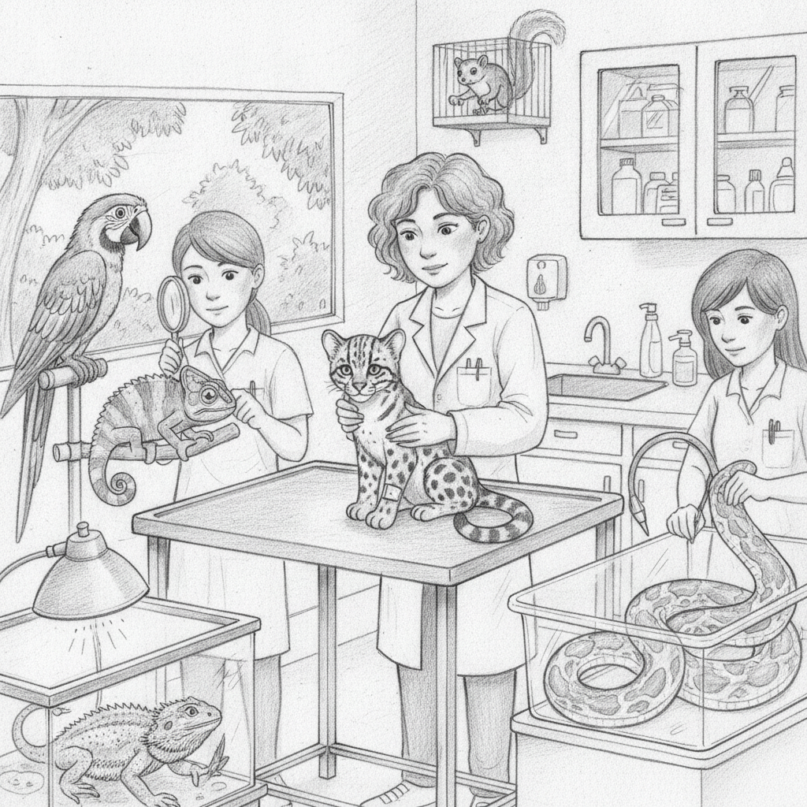

Zwierzęta egzotyczne
To, co wyróżnia naszą Przychodnię Safari :) U nas na pomoc może liczyć właściwie każdy zwierzak – niezależnie od tego, czy biega, lata, pełza, czy pływa. Niezależnie od tego, czy waży 300 kg, czy 30 g. Mamy specjalistów zajmujących się nie tylko domowymi pupilami, ale też zwierzętami dzikimi i nieudomowionymi. Współpracujemy z ogrodami zoologicznymi. Przychodnia wyposażona jest w dwa aparaty do anestezjologii wziewnej, dzięki czemu możemy prowadzić bezpieczną diagnostykę w znieczuleniu u zwierząt, które nie do końca chcą z nami współpracować. Na miejscu wykonujemy badania krwi, RTG, USG oraz badania kału, a także przeprowadzamy zabiegi operacyjne u zwierząt egzotycznych.